请相信我！—— 桌游完整中文规则书
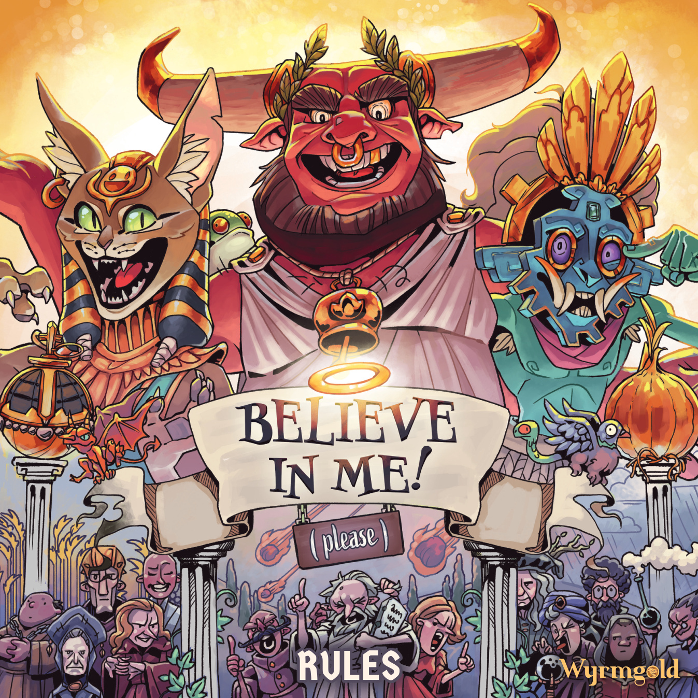
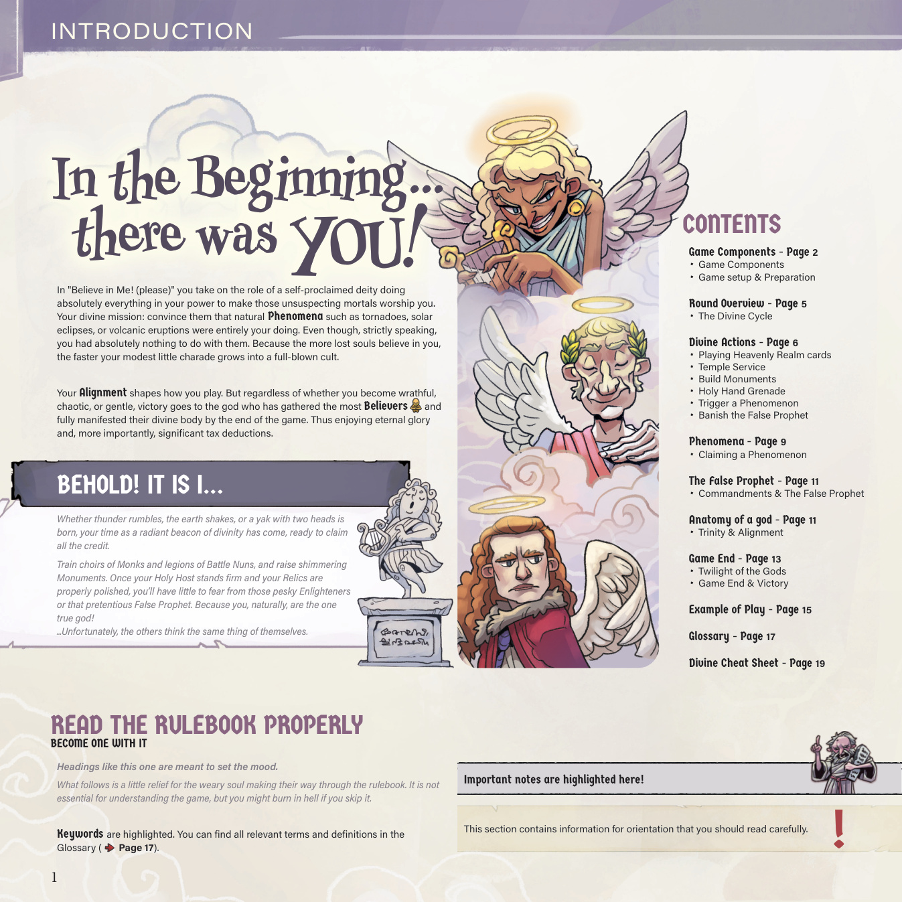
在《Believe in Me!（请相信我！）》中，你扮演一位自封的神明，用尽浑身解数让那些懵懂的凡人膜拜你。
你的神圣使命：让凡人相信，龙卷风、日食、火山喷发等自然现象全是你搞出来的——尽管严格来说你跟它们毫无关系。相信你的迷失灵魂越多，你这出不起眼的小把戏就越快成长为一场货真价实的大邪教（cult）。
你的阵营决定了你的玩法。但无论你成为暴怒、混乱还是温和之神，胜利都属于在游戏结束时聚集了最多信徒、并完整显现出三位一体（头、躯干、腿皆已显现）的那位神——从而享受永恒的荣耀，更重要的是，可观的税收减免。
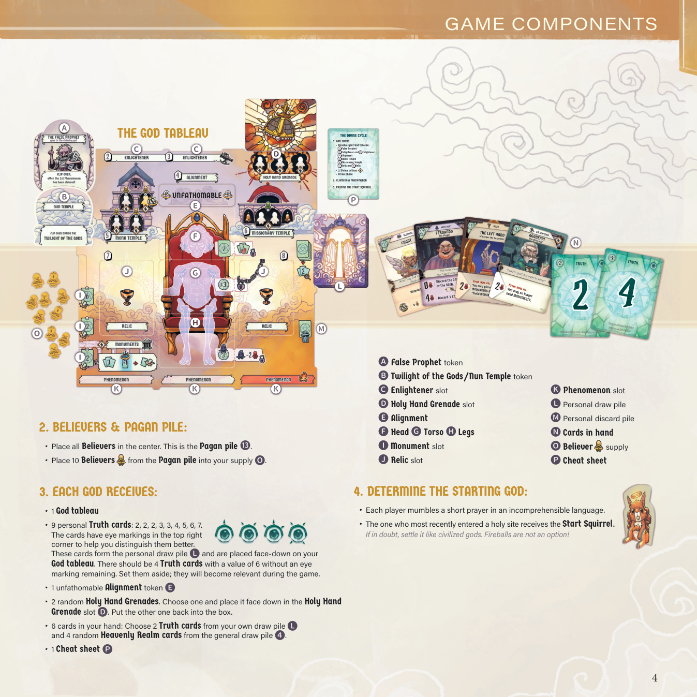
拆出、整理并温柔呵护游戏配件，是任何一位神最高的美德。永远不要把假先知和启蒙者混在一起，永远以应有敬意对待真理牌，无论如何都别把圣手榴弹掉地上——否则你可能会在诸神黄昏之前就先一步上了天堂。阿门。
| 数量 | 名称 | 说明 |
|---|---|---|
| 4× | 假先知标记（False Prophet Tokens） | 标记哪位神正被假先知缠身 |
| 4× | 修女殿（Nun Temples） | — |
| 16× | 阵营标记（Alignment Tokens） | 温和×4、暴怒×4、混乱×4、深不可测×4 |
| 140× | 信徒（Believers） | 小型米宝，虔诚满满 |
| 25× | 诫命标记（Commandment Tokens） | 标记针对你的诫命 |
| 1× | 混乱骰（Cube of Chaos） | 混乱之神结算时投掷 |
| 1× | 起始松鼠（Start Squirrel） | 决定起始玩家 |
| 1× | 假先知（False Prophet 模型） | 后期登场 |
| 数量 | 名称 |
|---|---|
| 1× | 主面板（Main Board，3 片拼合） |
| 4× | 神之面板（God Tableaus） |
| 25× | 诫命（Commandments） |
| 69× | 天界牌（Heavenly Realm Cards）：14 启蒙者 + 16 圣军 + 18 圣物 + 21 神恩 |
| 18× | 现象牌（Phenomena） |
| 18× | 纪念碑牌（Monuments） |
| 9× | 圣手榴弹（Holy Hand Grenades） |
| 4× | 速查表（Cheat Sheets） |
| 40× | 真理牌（Truth Cards）：每神 9 张（2,2,2,3,3,4,5,6,7）+ 4 张共用的无眼标「6」（备用） |
| 27× | 三位一体牌（Trinity Cards）：3 叠 ×9（温和 / 暴怒 / 混乱各 3 头 3 躯干 3 腿） |
每位神的个人棋盘，用来结算神务。各槽位如下：
把所有信徒放在桌面中央，这就是异教堆 ⓭。从异教堆中拿 10 名信徒放入你的供应区 🅞。
每位玩家用一种没人听得懂的语言喃喃念一段短祷。最近进入过神圣场所的人获得起始松鼠。若有争议，像文明的神一样解决——火球不在选项之内！
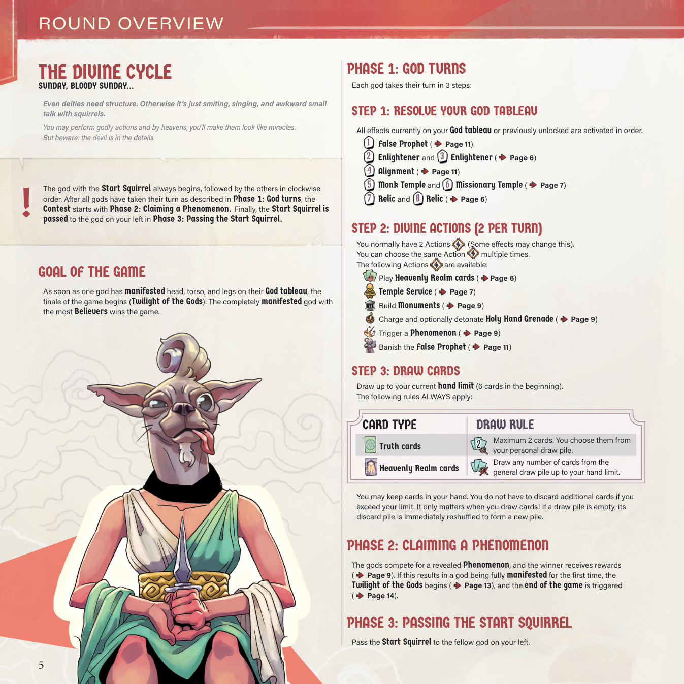
即便是神也需要结构，否则就只剩降罚、唱歌，以及和松鼠的尴尬闲聊。
一轮（神之轮回 / The Divine Cycle）由三个阶段依次构成，循环往复，直到某神集齐三体触发终局：
所有神按顺时针顺序，依次各完成一个完整回合——持有起始松鼠的神先开始，其余跟在其后。每位神的回合都包含下面 3 步：
| 卡牌类型 | 抽取规则 |
|---|---|
| 真理牌 | 最多 2 张，从个人抽牌堆中自行挑选。 |
| 天界牌 | 从公共抽牌堆任意抽，直到手牌上限。 |
众神为一张翻出的现象竞争，胜者获得奖励。若此导致某神首次完整显现，则触发诸神黄昏（见第 9 节），游戏进入终局。
把起始松鼠传给左手边邻神。
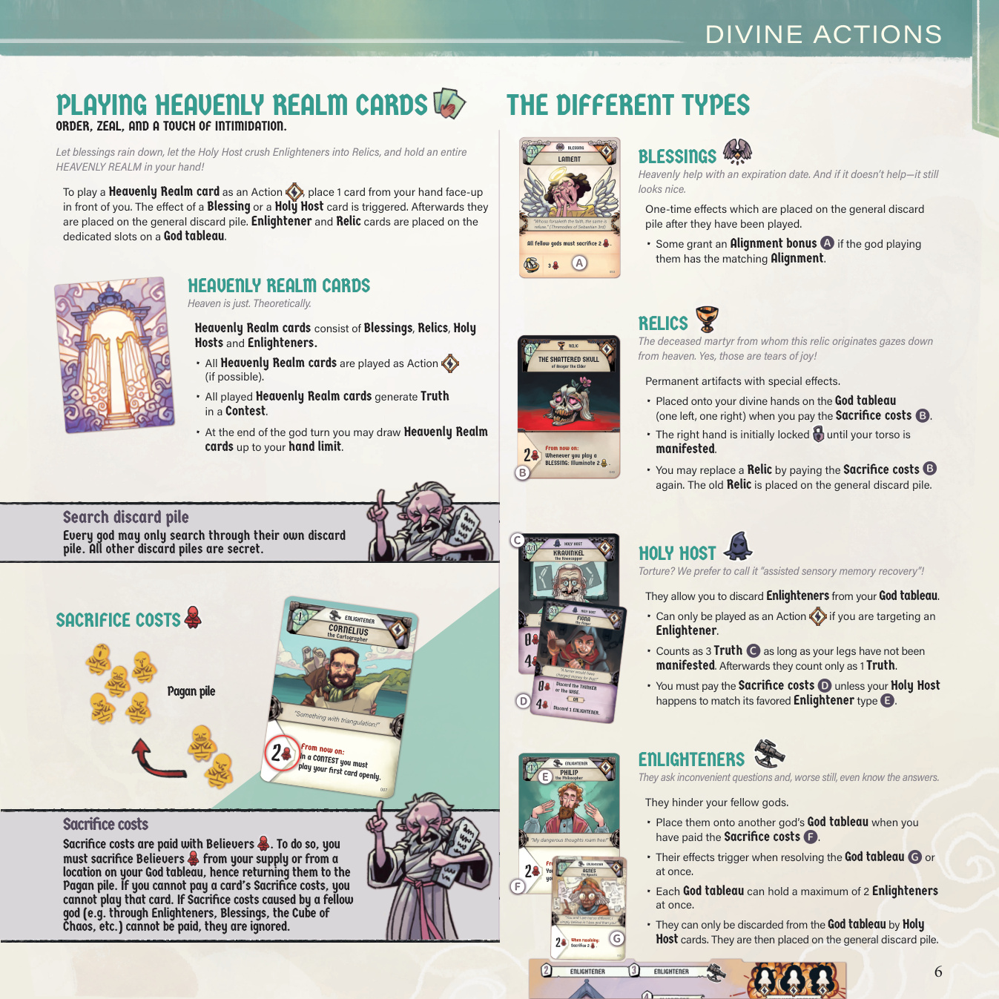
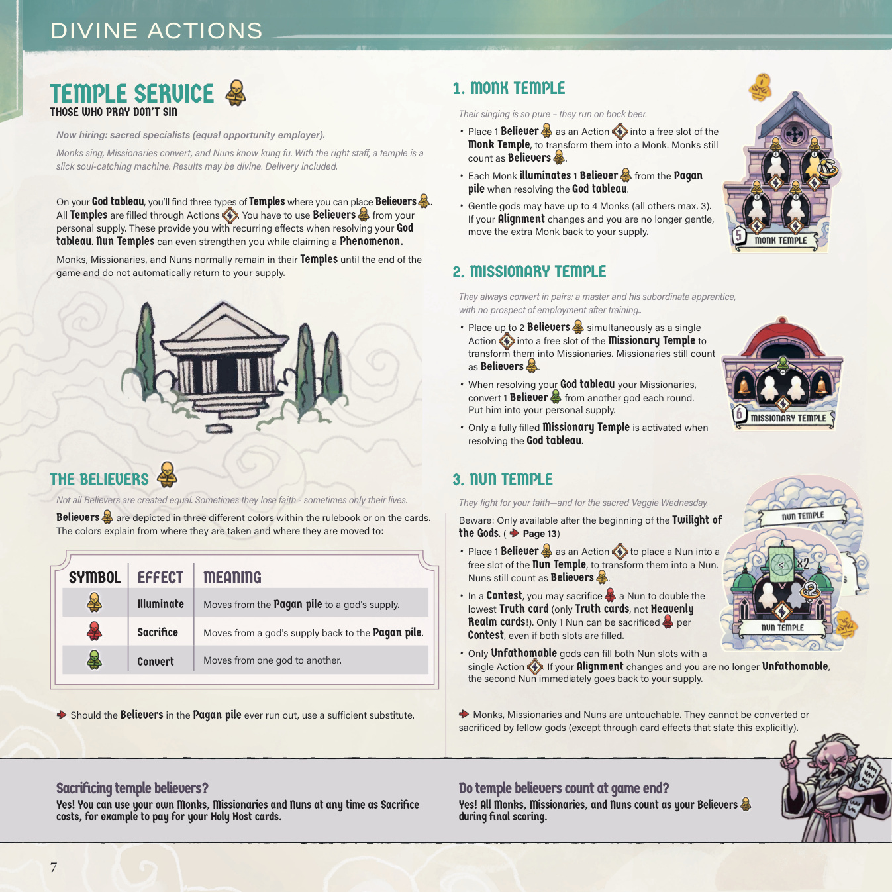
要把一张天界牌作为行动打出，从手牌中取 1 张正面朝上放在身前，触发其效果：
用信徒支付：从你的供应区或面板上的某处牺牲信徒，使其回到异教堆。若付不起某牌的牺牲消耗，则不能打出该牌。若由邻神造成的牺牲消耗（如启蒙者、神恩、混乱骰等）付不起，则忽略。
你的面板上可摆放三类神殿，用行动把来自个人供应区的信徒放入其中，在结算面板时提供持续效果。修女殿还能在争夺现象时增强你。
纪念碑是三部分结构，放上面板即改善你的个人抽牌堆，集齐三张同名牌后获得独特加成。
| 纪念碑位置 | 效果 |
|---|---|
| 第 1 块 | 从任意一名神处移除 1 张真理 2 牌 * |
| 第 2 块 | 再移除 1 张真理 2 牌 * |
| 第 3 块 | 获得 1 张真理 6 牌 ** |
* 将其从手牌 / 弃牌堆 / 个人抽牌堆移出游戏（放回盒中）。
** 直接取一张「无眼标的备用 6」进手牌。
把你面板上的某张现象作为行动打出，触发其效果，随后该现象牌放入现象弃牌堆。
作为行动打出假先知，把他「驱逐」给一名邻神，并在诫命山上刻下一条诫命（详见第 7 节）。
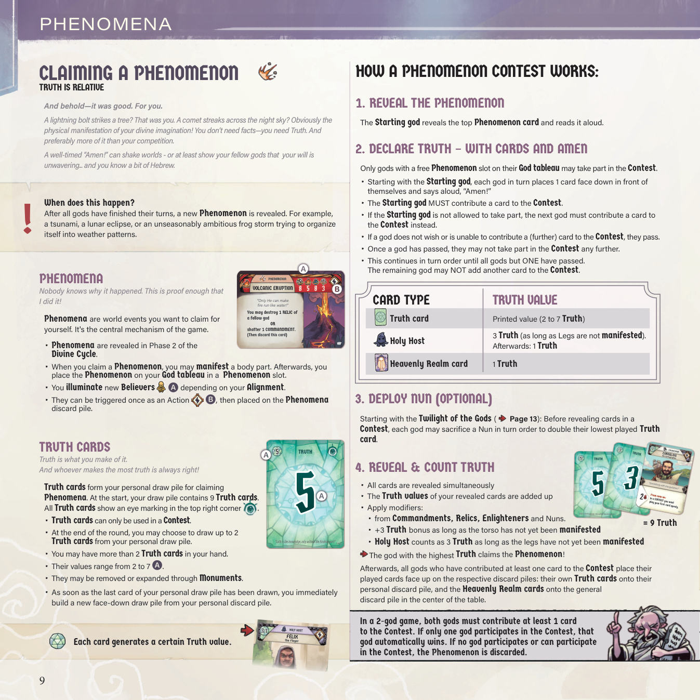
现象是你想要据为己有的世界事件，是游戏的核心机制。每轮阶段二翻出一张，通过争夺战认领。
| 卡牌类型 | 真理值 |
|---|---|
| 真理牌 | 印刷数值（2–7） |
| 圣军 | 腿未显现 = 3；之后 = 1 |
| 天界牌（其他） | 1 |
平局：信徒（供应区 + 面板上）较少者胜；仍平则最后出牌者胜。
胜者：① 按阵营感召信徒；② 把现象存入空现象槽；③ 可显现该现象阵营的一个肢体（见第 8 节）；④ 首次认领现象时，假先知登场！
| 你的阵营 | 感召信徒数 |
|---|---|
| 与现象阵营不同 | 8 |
| 与现象阵营相同 | 5 |
| 深不可测（默认） | 3 |
| 纯粹深不可测（三体三阵营） | 10 |
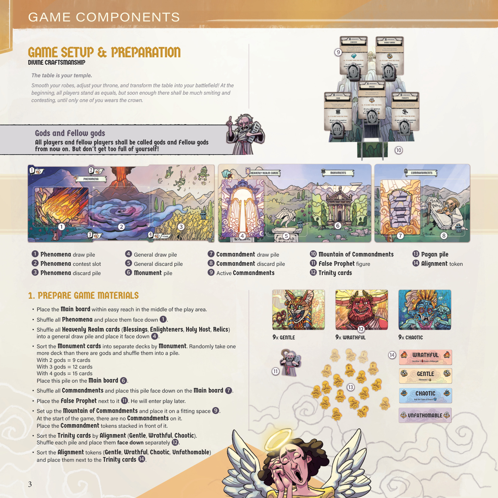
假先知四处游荡，宣讲据他说是神亲口颁布的严格诫命（当时只有他一人，且无人能证伪）。他还带着浓烈的神秘草药与未知蘑菇味——但既然刻在石板上，那必定是真的……
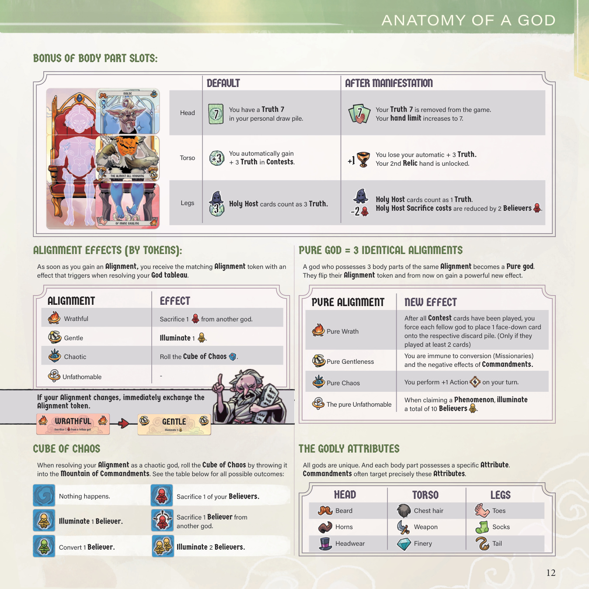
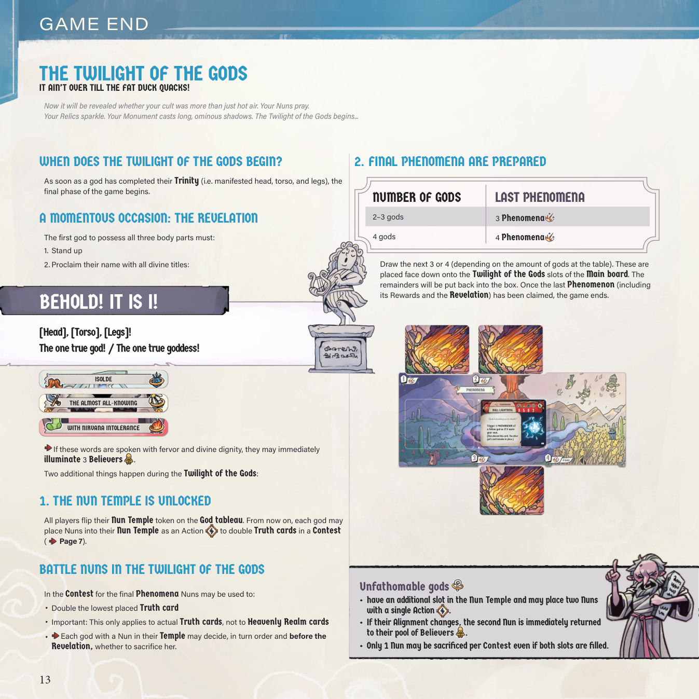
一位神不能没有星体身躯。激光眼？千层面肋骨？鱼袜？你需要全部——毕竟神性全看脸。但注意：身躯越完整，你的意图就越透明。
| 槽位 | 显现前（默认加成） | 显现后 |
|---|---|---|
| 头（Head） | 个人抽牌堆中有一张「真理 7」 | 「真理 7」移出游戏；手牌上限升至 7 |
| 躯干（Torso） | 争夺中 +3 真理 | 解锁第二只圣物手 |
| 腿（Legs） | 圣军牌在争夺中计 3 真理 | 圣军牌计 1 真理；牺牲消耗减少 2 名信徒 |
显现肢体 = 用三位一体牌盖住该槽：失去默认加成，解锁牌面右侧的新常驻效果（以符号标记）。每位神每个肢体只能显现一次。
阵营分为 深不可测 / 温和 / 暴怒 / 混乱 四种。它由你已显现肢体（头 / 躯干 / 腿）的"多数阵营"决定，并会随你显现新肢体而变动。原规则书将这一判定画成图示，此处转写为文字流程：
| 已显现肢体及其阵营 | 多数 | 结果阵营 |
|---|---|---|
| （无任何肢体） | — | 深不可测（默认） |
| 温和 ×1 | 温和 | 温和 |
| 温和 ×2 | 温和 | 温和 |
| 温和 ×1 + 暴怒 ×1 | 无多数 | 深不可测 |
| 温和 ×2 + 暴怒 ×1 | 温和 | 温和 |
| 温和 ×1 + 暴怒 ×1 + 混乱 ×1 | 无多数 | 深不可测（三体三阵营 → 纯粹深不可测） |
| 温和 ×3（三体同阵营） | 温和 | 纯粹温和 |
| 阵营 | 结算面板时的效果 |
|---|---|
| 暴怒（Wrathful） | 牺牲 1 名邻神的信徒 |
| 温和（Gentle） | 感召 1 名信徒 |
| 混乱（Chaotic） | 投掷混乱骰 |
| 深不可测（Unfathomable） | —（无加成，但有特殊优势） |
三体同为某阵营即成为纯粹神，翻转阵营标记获得强力新效果：
| 纯粹阵营 | 新效果 |
|---|---|
| 纯粹暴怒 | 所有争夺牌打出后，强制每位邻神（若其出了 ≥2 张）放 1 张背面朝上牌入弃牌堆 |
| 纯粹温和 | 免疫转化（传教士）与诫命的负面效果 |
| 纯粹混乱 | 你的回合 +1 个行动 |
这是与上面"三体同阵营"恰好相反的特殊纯粹态。术语书原文："Pure unfathomable consists of three different Alignments from three body parts."
如何达成：让三块肢体分别属于三种不同阵营（温和、暴怒、混乱各一）。三体俱全 + 无多数 → 既是"深不可测"，又因三体完整而被定义为"纯粹深不可测"。
阵营改变时立即更换阵营标记。
每个肢体带有特定属性，诫命常针对这些属性：
| 头 | 躯干 | 腿 |
|---|---|---|
| 胡须（Beard） | 胸毛（Chest hair） | 脚趾（Toes） |
| 头饰（Headwear） | 华服（Finery） | 袜子（Socks） |
| 犄角（Horns） | 武器（Weapon） | 尾巴（Tail） |
混乱之神结算阵营时，把混乱骰抛入诫命山，按结果执行：
| 结果 | 效果 |
|---|---|
| ① | 无事发生 |
| ② | 牺牲 1 名你自己的信徒 |
| ③ | 感召 1 名信徒 |
| ④ | 牺牲 1 名邻神的信徒 |
| ⑤ | 转化 1 名信徒 |
| ⑥ | 感召 2 名信徒 |
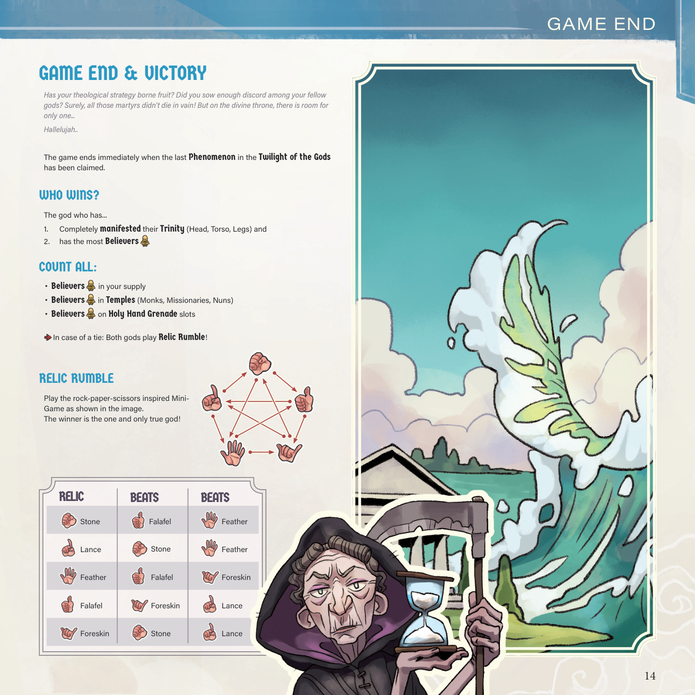
一旦有神完成三位一体（头、躯干、腿皆已显现），终局阶段开始。
首位集齐三体的神必须：① 起立；② 用全部神衔宣告真名：
诸神黄昏期间另有两件事：
当诸神黄昏中最后一张现象被认领，游戏立即结束。
获胜条件：① 完整显现三位一体（头、躯干、腿）；② 信徒最多。
计入：供应区信徒 + 神殿中信徒（僧侣 / 传教士 / 修女）+ 圣手榴弹槽上的信徒。
若平局，双方进行类似石头剪刀布的迷你对决，胜者为唯一真神。五者相克如下：
| 出招 | 击败 | 也击败 |
|---|---|---|
| 石（Stone） | 法拉费（Falafel） | 羽毛（Feather） |
| 枪（Lance） | 石（Stone） | 羽毛（Feather） |
| 羽毛（Feather） | 法拉费（Falafel） | 包皮（Foreskin） |
| 法拉费（Falafel） | 包皮（Foreskin） | 枪（Lance） |
| 包皮（Foreskin） | 石（Stone） | 枪（Lance） |
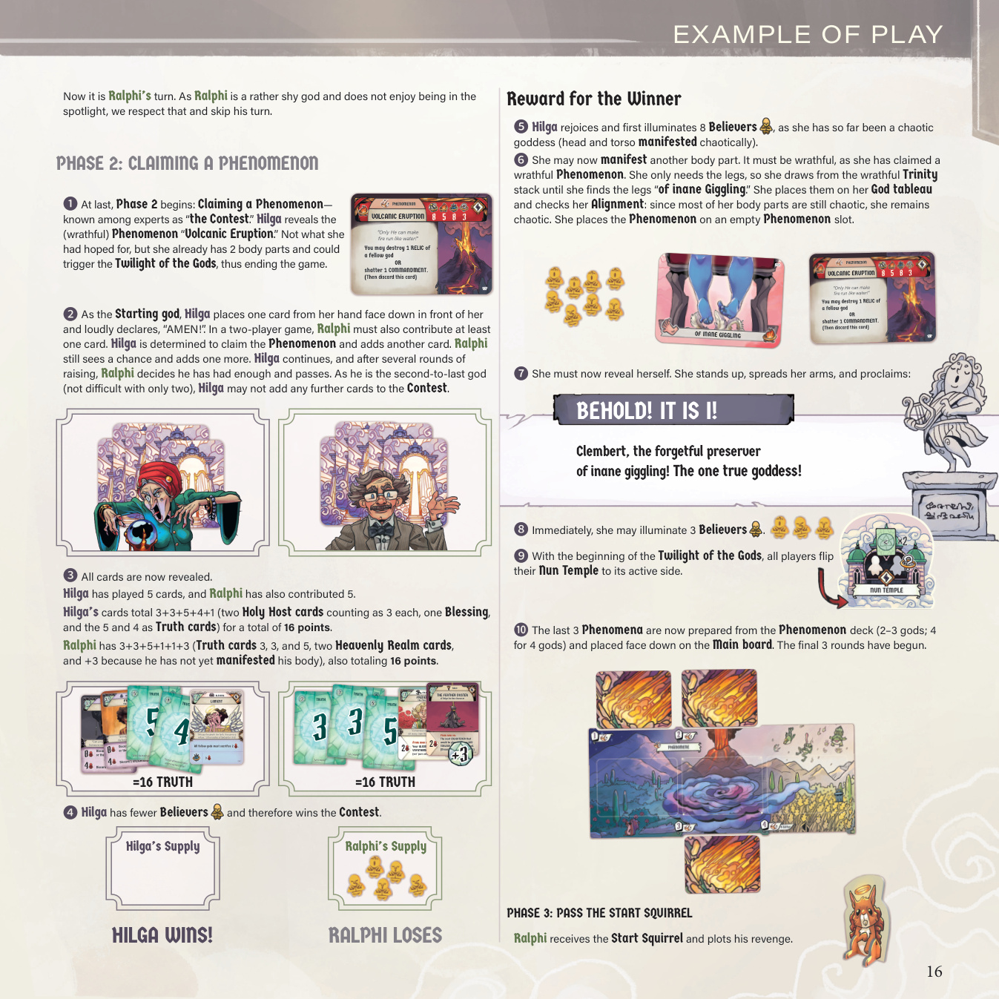
以 Hilga（混乱女神）对 Ralphi（暴怒之神）的两人对局片段为例。
第 1 步 结算面板：① 假先知在面板上，先牺牲 1 名信徒回异教堆。② 有个启蒙者，左手边邻神 Ralphi 转化了 Hilga 的 2 名信徒到自己供应区。③ 此处无启蒙者，跳过。④ 混乱阵营，投掷混乱骰，结果可转化 1 名邻神信徒——Ralphi 的 1 名信徒直接回到 Hilga 供应区。⑤ 僧侣殿有信徒，从异教堆感召 1 名。⑥ 传教士殿只有 1 名，未填满，本回合不转化。⑦ 圣物「Selma 的弹弓」迫使 Ralphi 弃 1 张天界牌或让 Hilga 感召 2 名信徒；Ralphi 嘟囔着弃了张神恩。⑧ 此处无圣物，跳过。
第 2 步 神之行动：➒ 先把假先知赶去 Ralphi，Ralphi 立即牺牲 3 名信徒；Hilga 从诫命堆抽 3 张，选「Beep（倒车请鸣笛）」刻上诫命山，暴怒的 Ralphi 受影响，拿起对应诫命标记。➓ 打出圣军「Henry the High Priest」到启蒙者「Wilma the Wise」上，牺牲 4 名信徒（供应区不够，从传教士殿取最后 1 名支付）。
第 3 步 抽牌：⓫ 已显现头，手牌上限 7；从个人堆抽 2 张真理牌（上限），再抽 2 张天界牌补到 7 张。
❶ Hilga 翻出（暴怒）现象「火山喷发」。❷ 作为起始神，Hilga 放 1 张牌喊 Amen；两神对局 Ralphi 也须出至少 1 张。几轮加注后 Ralphi 过牌（pass），Hilga 不可再加。❸ 亮牌：Hilga 共 3+3+5+4+1=16（两张圣军各 3、1 神恩、5 与 4 真理）；Ralphi 3+3+5+1+1+3=16（含未显现的 +3）。❹ Hilga 信徒更少，赢得争夺。❺ 因迄今为混乱（头躯干皆混乱），感召 8 名信徒。❻ 该现象为暴怒，须显现暴怒的腿「Of Inane Giggling」，放入面板并检查阵营——多数仍为混乱，故保持混乱，把现象放进空槽。❼ 起立宣告：「看哪！是我！Clembert，健忘的守护者，荒诞痴笑之主！唯一真女神！」立即感召 3 名信徒。❽ 诸神黄昏开始，所有玩家翻转修女殿。❾ 最后 3 张现象备好（2–3 神），终局三轮开启。
阶段三：Ralphi 接过起始松鼠，谋划复仇。Hilga 胜！
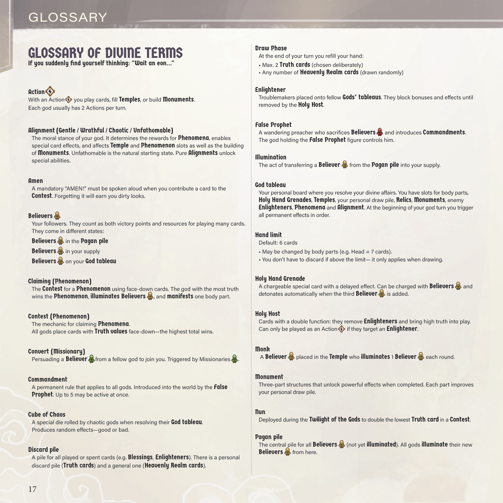
| 术语 | 释义 |
|---|---|
| 行动（Action） | 打出牌、填充神殿或建纪念碑等。每位神通常每回合 2 个行动。 |
| Amen | 向争夺出牌时必须大声说「Amen！」，忘了会招来白眼。 |
| 阵营（Alignment） | 温和 / 暴怒 / 混乱 / 深不可测。决定现象奖励、特殊牌效、神殿与现象槽及纪念碑建造。深不可测为开局默认；纯粹阵营解锁特殊能力。 |
| 感召（Illuminate） | 把信徒从异教堆移入你的供应区。 |
| 信徒（Believers） | 你的追随者，既是胜利点数也是打牌的资源。状态分：异教堆 / 供应区 / 面板上。 |
| 神之面板（God tableau） | 你的个人棋盘，结算神务之处，含肢体、圣手榴弹、神殿、抽牌堆、圣物、纪念碑、启蒙者、现象、阵营等槽位。 |
| 手牌上限（Hand limit） | 默认 6；可被肢体改变（如头 = 7）。超上限不弃牌，仅抽牌时生效。 |
| 争夺 / 认领现象（Claiming / Contest） | 用背面朝下牌争夺现象的机制，真理值最高者获胜，感召信徒并显现一肢体。 |
| 诫命（Commandment） | 对所有神生效的常驻规则，由假先知引入，最多同时 5 条。 |
| 混乱骰（Cube of Chaos） | 混乱之神结算面板时投掷的特殊骰，产生随机好坏效果。 |
| 启蒙者（Enlightener） | 放在邻神面板上的捣蛋鬼，封锁加成与效果，直至被圣军清除。 |
| 异教堆（Pagan pile） | 所有（尚未感召的）信徒中央堆，众神从中感召新信徒。 |
| 弃牌堆（Discard pile） | 已打出/耗费牌的堆（神恩、启蒙者等）。有个人弃牌堆（真理牌）与公共弃牌堆（天界牌）。 |
| 假先知（False Prophet） | 游走传教者，牺牲信徒并引入诫命；持有其模型者掌控他。 |
| 圣手榴弹（Holy Hand Grenade） | 可充能的特殊牌，延迟爆炸；用信徒充能，第 3 名信徒加入时自动引爆。 |
| 圣军（Holy Host） | 双重功能牌：清除启蒙者，并为争夺带来高真理值。只能以启蒙者为目标作为行动打出。 |
| 僧侣（Monk） | 放入神殿的信徒，每轮感召 1 名信徒。 |
| 纪念碑（Monument） | 三部分结构，集齐后解锁强力效果，每部分改善个人抽牌堆。 |
| 修女（Nun） | 诸神黄昏期间用于翻倍争夺中最低真理牌。 |
| 现象（Phenomenon） | 核心游戏元素，每轮翻出一张经争夺认领，奖励为感召信徒、获得肢体及「触发现象」行动。 |
| 纯粹神（Pure god） | 三体同阵营之神（温和 / 暴怒 / 混乱），翻转阵营标记获得强力新效果（见 8.3.2）。 |
| 纯粹深不可测（Pure Unfathomable） | 三体俱全且分属三种不同阵营（温和 + 暴怒 + 混乱），无多数 → 深不可测但三体完整；认领现象感召 10 名信徒（见 8.3.3）。 |
| 圣物（Relic） | 放在神之圣物槽上的常驻装备，右手开局锁定。 |
| 结算面板（Resolving the God tableau） | 回合开始时按顺序触发所有常驻效果：假先知 → 启蒙者 → 阵营 → 僧侣 → 传教士 → 圣物。 |
| 牺牲消耗（Sacrifice costs） | 用信徒支付（来自供应区或面板），随后回异教堆。 |
| 转化（Convert） | 传教士把邻神的一名信徒拉拢过来。 |
| 三位一体（Trinity） | 由头、躯干、腿组成的神之身躯，每部分有属性与阵营；显现不同部分会改变阵营与能力。 |
| 真理牌（Truth card） | 数值 2–7 的牌，组成个人抽牌堆，是争夺现象的主要手段，可被纪念碑改善。 |
| 诸神黄昏（Twilight of the Gods） | 终局阶段，某神完成三位一体时开始，最后几张现象被争夺，修女可登场。 |
| 深不可测（Unfathomable） | 无多数阵营的状态，无阵营加成，但有特殊优势（如一次行动放两名修女、受益于某些诫命）。 |
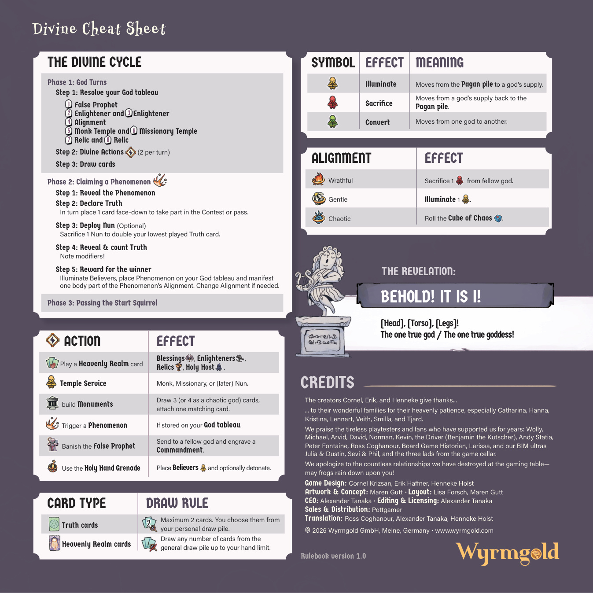
阶段一 神之回合 所有神按顺时针依次各走一回合：每位神 第1步 结算面板（假先知→启蒙者→阵营→僧侣殿→传教士殿→圣物）→ 第2步 神之行动（每回合 2 个）→ 第3步 抽牌；所有人都走完才进阶段二。
阶段二 争夺现象 ① 翻出现象 → ② 宣示真理（轮流放 1 张背面朝下或 pass）→ ③ 部署修女（可选）→ ④ 亮牌计真理（注意修正）→ ⑤ 胜者奖励（感召信徒、存现象、按现象阵营显现一肢体；必要时改阵营）。
阶段三 传递起始松鼠 给左手边邻神。
「看哪！是我！[头]，[躯干]，[腿]！唯一真神 / 真女神！」
| 行动 | 效果 |
|---|---|
| 打出天界牌 | 神恩、启蒙者、圣物、圣军 |
| 神殿服务 | 僧侣 / 传教士 /（后期）修女 |
| 建造纪念碑 | 抽 3 张（混乱神抽 4），附上 1 张同名 |
| 触发现象 | 若面板上有存放的现象 |
| 驱逐假先知 | 送给邻神并刻下一条诫命 |
| 使用圣手榴弹 | 放信徒充能，可视情况引爆 |
| 阵营 | 效果 |
|---|---|
| 暴怒 | 牺牲 1 名邻神信徒 |
| 温和 | 感召 1 名信徒 |
| 混乱 | 投掷混乱骰 |
| 深不可测 | — |
| 卡牌类型 | 规则 |
|---|---|
| 真理牌 | 最多 2 张，从个人抽牌堆自选 |
| 天界牌 | 从公共抽牌堆任意抽至手牌上限 |
游戏设计：Cornel Krizsan、Erik Haffner、Henneke Holst
美术与概念：Maren Gutt · 排版：Lisa Forsch、Maren Gutt
CEO：Alexander Tanaka · 编辑与授权：Alexander Tanaka
销售与发行：Pottgamer
翻译：Ross Coghanour、Alexander Tanaka、Henneke Holst
© 2026 Wyrmgold GmbH, Meine, Germany · www.wyrmgold.com 规则书版本 1.0
本中文版由规则书原文译排整理，仅供个人阅读学习使用。